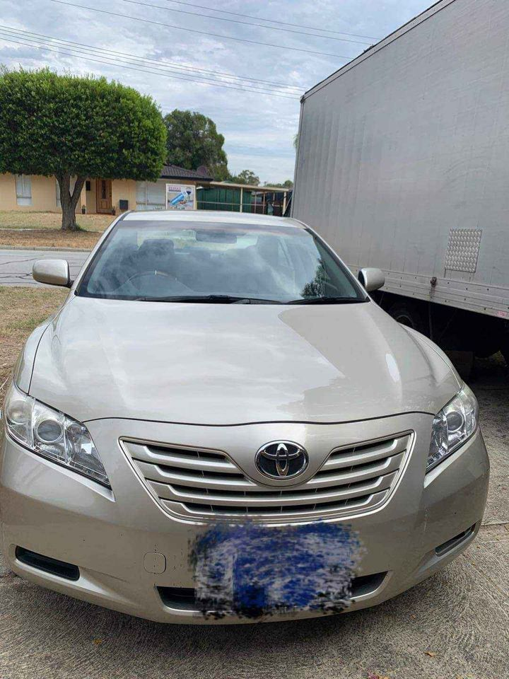

Our friendly team will help you in your spare parts search or, if you prefer, you can access our extensive spare parts database and search for used parts suitable for Toyota vehicles online to find the exact spare part for your vehicle. We also stock a wide range of used and reconditioned engines at our Melbourne HQ and also import and export car parts internationally.
WA Auto Parts is located in Melbourne's Eastern Suburbs, 13 Kropf Place, Ashwood, VIC 3146. You can visit our website to view our fleet of Toyota vehicles and contact our team to view their stock.
There are hundreds of thousands of these classic 4-cylinder Toyota petrol engines waiting for your Toyota to import and recondition for $200-$1000 depending on how you recondition them. We can also do the same for Volvo, Volkswagen and Ford car engines. Used Parts for New Toyota Models We buy brand new vehicles all over the world so we have the best selection of brand new parts for Toyota Motor cars such as the latest Camry, Corolla, Hilux, Hilux 4×4, RAV4, 4Runner, Land Cruiser, Hilux dCi and Highlander. Used Large Parts for Classic Toyota Cars We stock all models of 4-cylinder diesel Toyota engines and petrol engines such as the Corolla, Hilux, Camry and Highlander.

Our used car parts collection is one of the biggest and most comprehensive on the market and includes thousands of parts from Japanese car brands, like Toyota, Nissan, Honda, Suzuki and Mitsubishi. It includes all major engine types, such as 1.3, 1.5, 1.8, 2.0 and 2.4-litre; transmissions, including automatic, manual and CVT, as well as coolant pumps and engines, and automotive systems including ABS, ASR, EBD, ETC, etc. The parts are delivered within 24 hours and prices are competitive and guaranteed. Our Commercial Vehicle Parts Our Commercial Vehicle Parts range includes a large range of parts including a complete engine and transmission, with starter motor and driveline, anti-lock braking systems (ABS), drive train and steering wheel.
If you want to import or export parts internationally, please contact us at 1800 029 111. If you have a Toyota of any make, model or decade, we can help you to sell your used parts at our Toyota Parts Warehouse. Our Toyota Parts Warehouse has a growing range of good quality used parts for used Toyota vehicles. In the most pressing cases, we can send your parts to your preferred parts exchange location. We can also help you arrange a buy-back of your used parts to Toyota for its resale. In order to arrange a buy-back, please contact us at 1800 029 111. Vehicle History We are the only Toyota Motor Vehicle Collision Repairer in Melbourne that maintains all of the old car parts so they are still in tip-top condition.
Toyota will always have a place in your heart, no matter the era. But don't expect a top dollar deal when you bring your Japanese icon to Toyota Australia – our pricing is competitive and much cheaper than what you would pay elsewhere.
Address:103 Sheffield Rd, Welshpool WA 6106
Phone: (08) 9358 1392